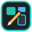

MDI-Icons auswählen oder einen Icon-Namen bzw. Bildpfad eintragen. Unterstützt werden z. B. mdi:home, atlas:home, custom:..., /local/... sowie PNG, JPG und SVG.
Änderungen werden nach der eingestellten Ruhezeit im aktuellen Projekt gespeichert.
Diese Farbe gilt für alle Andockpunkte und ihre Belegungszähler. Standard: Gelb.
Um den Filter zu verwenden, aktiviere bei mindestens einem Widget den Bereich „Generell“ und trage dort ein Filterwort ein.

Bilder, Code/JSON, Text, Audio und Video bis 20 MB. Für Icons und Bildfelder können Bilddateien übernommen werden.
Keine Entität ausgewählt
Entitäten werden geladen …